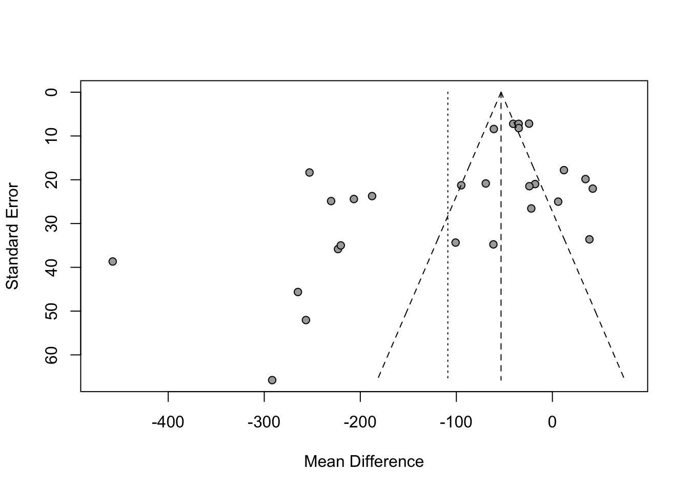

This analysis uses metadata of 28 studies concerning time spent by boys and girls with gender-related toys. Particulary the significance of the difference between the times boys spent playing with toys assocciated with girls (experimental group) is compared to time boys spent with toys associated with boys (control group).
Funell plot is used to visualise dispersion of differences between the studies.
Additionaly the influence of factors such as: gender of authors, justification for the gendered nature of a toy and study quality score is examined.
Number of studies: k = 27
Number of observations: o = 1594 (o.e = 797, o.c = 797)
MD 95%-CI z p-value
Common effect model -53.4740 [ -59.1197; -47.8283] -18.56 < 0.0001
Random effects model -108.8697 [-155.6944; -62.0450] -4.56 < 0.0001
Quantifying heterogeneity:
tau^2 = 14594.5851 [8849.8303; 29246.4845]; tau = 120.8081 [94.0735; 171.0160]
I^2 = 95.3% [94.1%; 96.3%]; H = 4.62 [4.12; 5.18]
Test of heterogeneity:
Q d.f. p-value
554.07 26 < 0.0001
Details on meta-analytical method:
- Inverse variance method
- Restricted maximum-likelihood estimator for tau^2
- Q-Profile method for confidence interval of tau^2 and tau
Observation: We may observe significant, strong, negative differences between the average time boys spent with female toys and male toys. This suggests that empirically they are more reluctant to play with female toys.
Funnel plot
```{r}m %>% funnel()```

Observation: The results are not symmetrically distributed around the average with majority on the left side which can be caused by inconsistency of sample sizes. However we observe a high prevalence of negative difference estimates with moderate standard errors which further supports the conclusion from common/random effects models.
Finding what explains the results
Let’s see if the effect sizes are determined by how the study was conducted and the gender of authors.
Observation: We may observe that neither the justification for the gendered nature of a toy (Case definition adequate), nor Newcastle-Ottawa Score (NOS score) proved significant. Only number of female authors turned out significant and explained the effects sizes (presence of male authors also did not prove significant).